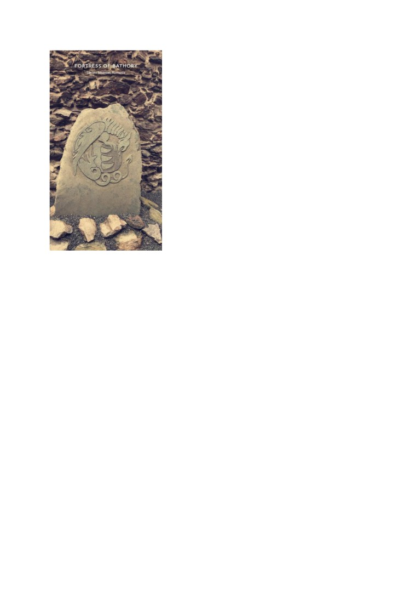

Cetatea Bathory
Cetatea Bathory din Șimleu Silvaniei este o cetate medievală care datează din a doua
jumătate a secolului XV. Astăzi servește ca unul dintre obiectivele turistice ale orașului și
găzduiește de-a lungul anului diferite eveniemnte și activități destinate atât comunității
șimleuane cât și celor care se încumetă să viziteze.
Astfel, l-am contactat pe domnul Daniel Stejerean, director al Muzeului Memorial al
Holocaustului din Transilvania de Nord și a Centrului Național de Informare și Promovare
Turistică din Șimleu Silvaniei pentru a-i pune o serie de întrebări despre istoria cetății Bathory
și despre activitățile care au loc în interiorul cetății.
Prima întrebare adresată a fost: “Ce poveste se ascunde în spatele acestor ziduri?”. După ce
acesta aruncă o privire lungă înspre ce a mai rămas din castelul Bathory care se afla în acest loc,
răspunde: “Fortăreața, declarată în prezent monument istoric, exista în anul 1532, fiind reședința
familiei nobiliare a Bathoreștilor, istoria medievală a Șimleului fiind strâns legată de familia
Báthory, familie princiară, care a jucat roluri importante în istoria transilvăneană. Cetatea
Șimleu intră în posesia familiei amintite anterior în urma casatoriei lui Bathory Lászlo cu
Medgyesaljai Anna, în anul
1351, devenind resedința Principilor ardeleni din familia
Báthory.De la începutul sec. al XVI-lea datează construirea castelului cetate din centrul
orașului, reședința familiei nobiliare Bathory și centrul unui întins domeniu feudal. Acesta
cuprindea 50 de localități, din care două erau târguri: Șimleu Silvaniei și Crasna și 48 erau sate,
din care 37 erau românești, iar 11 erau maghiare.De-a lungul vremii, cetatea și orasul au suferit
numeroase atacuri și devastări din partea turcilor și tătarilor, dintre care cele mai pustiitoare au
fost cele din 1594 și 1668. Ultimul atac a marcat și începutul declinului cetății care în 1774
ajunge în proprietatea orașului.”

Informându-mă puțin la rândul meu despre această cetate,
am auzit de o legendă urbană, așa că, după ce Daniel a
terminat de povestit scurta istorie, următoarea mea întrebare
a fost: “Am auzit de o legendă urbană despre Ștefan Bathory
a înfrânt un balaur, poți să o povestești?”, răspunsul lui a
fost aproape instantaneu: “Desigur, după cum poți vedea
aici - arătând către o piatră în care era sculptat blazonul
familiei Bathory - pe acest blazon se află trei dinți de
balaur, ei bine, această legendă spune că cei trei dinţi din
blazonul familiei Bathory se explică prin faptul că Ştefan a
ucis în tinereţe un balaur care mânca oile țăranilor și care
locuia într-o peşteră situată într-unul din versanţii dealului
Popos, de pe malul stâng al râului Crasna, care trece prin
centrul orașului. Ştefan a umplut mai multe blăni de oaie cu
var nestins, balaurul a mâncat respectivele blănuri, după
care a coborât la Crasna să bea apă. În momentul în care apa
băută de balaur a făcut contact cu varul, acesta a început să
se stingă în balaur, ucigându-l. Principele i-a scos trei dinţi,
care au ajuns mai apoi pe blazonul familiei.”
După ce am trecut printr-o scurtă lecție de istorie,
am ales să vorbim despre vremurile actuale, următoarea mea întrebare fiind: “După o istorie atât
de bogată, ce se întâmplă azi în cetate?”. Parcă așteptând să pun întrebarea asta, îmi răspunde
cu o anumită urmă de entuziasm în voce “ Păi, chiar lângă cetate este sediul Centrului Național
de Informare și Promovare Turistică din oraș, unde avem la activ un grup de circa 20 de
voluntari, iar cu ajutorul lor, al primăriei și al Consiliului Local al Copiilor și Tinerilor, pe
parcursul anului avem diferite activități aici în cetate, precum activități de 1 iunie dedicate
copiilor, expoziții de artă locală, seri de film, dacă ne permit împrejurările, iar vara aceasta, cum
au fost impuse reguli de distanțare socială, am deschis porțile cetății domnului Dumitru
Costalaș, profesor de pictură în cadrul cercului de pictură Silvan-Art, care și-a adus elevii în
cetate, pentru a putea continua activitatea lor artistică, dar între timp să și respecte normele
impuse. Alt eveniment major care recent s-a mutat în incinta cetății este <<Fântâna dorului>>,
un festival de muzica populara, la care participă copii și adulți din diferite părți ale țării și care
are loc tot vara. De doi ani, tot în cetate, am început o nouă inițiativă, și anume <<Târgul
ocazional de Crăciun>>, la care promovăm talente locale și cu ajutorul Crucii Roșii Sălaj,
subfiliala Simleu, strângem bani și alimente pentru a însenina sărbătorile familiilor nevoiașe.
Acum, ultimul, dar cu siguranță nu cel din urmă, cel mai mare eveniment pentrecut aici sunt
chiar zilele cetății Bathory, când are loc
<<Bathory Fest>>, la care participă trupe de
reconstituire, atât din țară cât și din Republica Moldova și Polonia. Festivalul se întinde pe trei
zile, cu o paradă mică, în jurul cetății și una mare, prin centrul orașului, spectacole de
reconstituire al asediului cetății de către turci și multe altele.” Ajunși aproape la finalul întâlnirii,
ultima mea întrebare a fost: “Aveți ceva planuri sau proiecte legate de cetate pe viitor?”.
Oarecum amuzat de întrebarea pusă de mine, Daniel îmi răspunde: “Da, cetatea se află într-un
proiect european de reabilitare, iar pe lângă asta, ne axăm pe îmbunătățirea activităților deja
existente și pe un proiect de înfrățire cu orașul Czchów, din Polonia.”